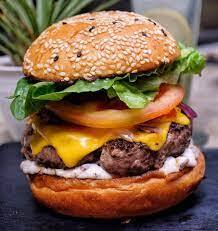

Resep Burger
1 buah roti burger 1 buah beef burger 1/4 sdt mayonnaise 1 sdm saus pedas 1/4 sdt parsley 1 lembar selada, cincang kasar secukupnya mentimun secukupnya bawang bombay secukupnya tomat 15 gram keju cheddar secukupnya butter/margarin
Read more